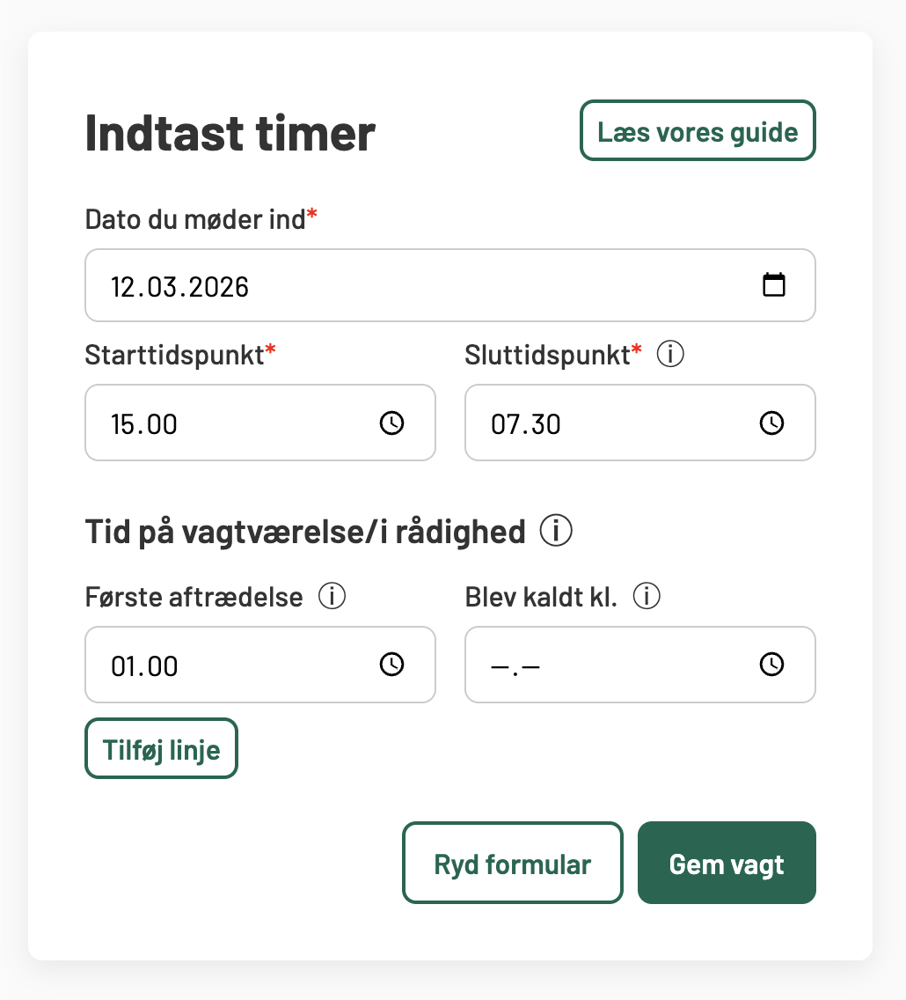
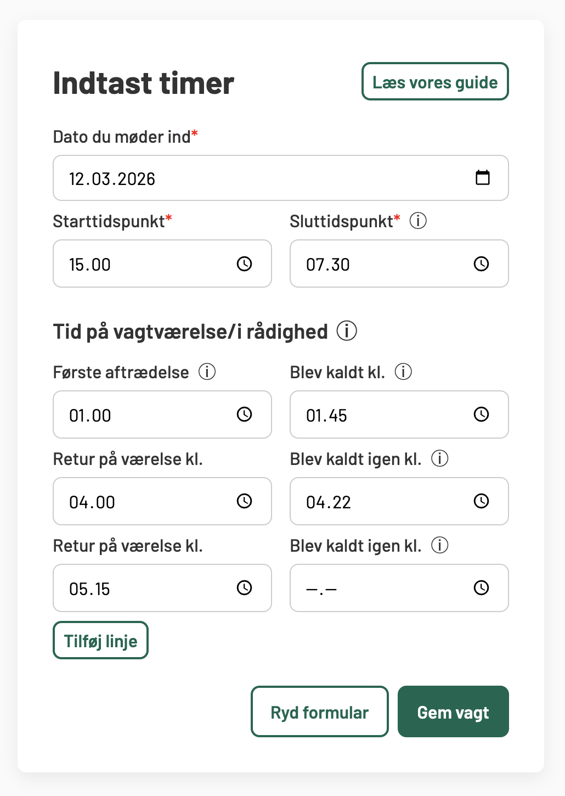

Sådan bruger du tillægsberegneren
Tillægsberegneren hjælper dig med løbende at holde et overblik over, om du optjener nok timer til at få 300-timers-tillægget.
Når du indtaster vagter, bliver de automatisk gemt i din browsers lokale hukommelse. Det betyder, at du ikke mister din data, hvis du lukker siden. Alt dataen ligger lokalt på din enhed i din browser. Du kan til enhver tid fjerne enkelte vagter eller rydde alt.
Nedenfor finder du en trin-for-trin guide til, hvordan du bruger værktøjet.
1) Indtast en vagt
For hver vagt skal du indtaste:
Dato når du møder ind
Starttidspunkt
Sluttidspunkt
Når du trykker "Gem vagt", bliver vagten gemt i oversigten. Beregneren håndterer automatisk vagter, der går over midnat. Vagterne gemmes i hukommelsen i browseren, så de vil stadig være der når du lukker hjemmesiden og åbner den igen senere.
Kalenderen tager automatisk højde for weekeender og helligdage.
2) Tast ind hvor længe du eventuelt var på vagtværelse
Du skal nu taste ind, hvor mange gange du henholdvis gik på vagtværelse/i rådighed og hvor mange gange du eventuelt blev kaldt igen.
I feltet Første aftrædelse skal du skrive, hvornår du første gange trådte fra på din vagt. Vi ved at mange her forskellige aftaler for, hvornår de har ret til at gå fra – f.eks. kl. 23 eller kl. 1. Derfor skal du blot skrive, hvornår du reelt gik fra dvs. hvis I hos jer går fra kl. 23, men du var aktivt kaldt indtil kl. 2, hvor du havde ro og gik på værelse, så skriv kl. 2 i dette felt. Hvis du blev kaldt igen efter første fratrædelse, skriver du dette i feltet ved siden af.
Hvis du vil tilføje flere intervaller med rådighedstimer, så klikker du Tilføj linje.
Et par eksempler kan se således ud:

Eksempel på korrekt udfyldt vagt med én fratrædelse og ingen kald herefter. Når feltet med kald ved siden af fratrædesen er tom, tolkes det som om, at du er fratrådt og var på værelse resten af vagten.

Eksempel på vagt med én fratrædelse og et kald igen kl. 1:45. Herefter var personen i aktiv arbejde til kl. 4:00, hvor de gik på vagtværelse. Derefter blev de kaldt igen kl. 4.22. Derefter gik personen på vagtværelse for sidste gang kl. 5:15 og blev der resten af vagten.
Du kan angive tidspunkterne lige så præcist, som du selv ønsker.
3) Vælg om værelsestimerne tæller med
Øverst i tabellen under "Mine vagter" finder du en indstilling, hvor du kan vælge:
☑ Tid på vagtværelse er tillægsgivende
Dette vil komme an på den lokalaftale, der gælder på din arbejdsplads. Checkboxen husker dit valg, så næste gang du åbner siden, behøver du ikke vælge igen. Når du ændrer indstillingen, opdateres alle vagterne automatisk, således at du nemt kan sammenligne, hvordan du er stillet i begge scenarier.
Hyppige spørgsmål
Nej, desværre. Dataen gemmes lokalt på enheden. Du kan dog trykke "Print mine vagter ud" og generer et dokument, som du kan printe eller sende til dig selv.
Dataen gemmes lokalt på din enhed i den browser, hvor du indtaster det. Det kan f.eks. være Google Chrome eller Safari. Det er kun dig og andre der evt. benytter samme computer, som kan se hvad du gemmer.
Vi anbefaler derfor at du skriver vagter ind på en computer/enhed, som du selv har råderet over og ikke en fælles arbejdscomputer eksempelvis.
Nej desværre. Men det er nemt at slette en vagt og tilføje en ny. Vagterne bliver automatisk sorteret efter dato, uanset hvornår du har indtastet dem.
På din lønseddel er der kun angivet de timer, som du rent faktisk har afviklet på den dato, hvor din lønseddel løber til. På 300timer.dk kan du indtaste kommende vagter, så det er muligt, at du er "foran" din HR-afdeling.
Hvis du alligevel kun har indtastet præcis de vagter, som der fremgår af din lønseddel og tallet stadig er mindre, så skal du gå til din nærmeste leder eller TR. Der kan være risiko for, at din arbejdsgiver har overset timer, som er tillægsgivende ifølge aftalen.
I den kommenterede aftale om vagttillægget, som Danske Regioner har udgivet, fremgår det at:
Under sygefravær optjenes vagttimer efter den normale vagtplan eller den bagvedliggende skyggeplan. [...] Formålet er, at den ansatte efter sygdom skal stilles, som om den ansatte ikke har været fraværende.
Samme ordlyd står der vedrørende barselsorlov. Du skal derfor gå til din nærmeste leder eller TR, hvis du mener, at dette ikke er blevet tilgodeset.